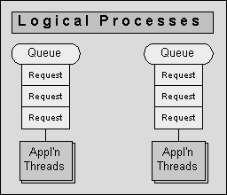
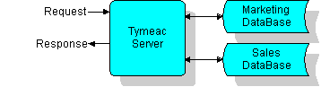
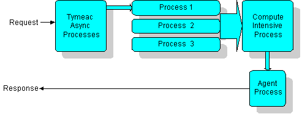

Backend Process Manager

Tymeac™ is a Backend Server -- the base for persistent storage.
This is what operating systems call a "process".
Why separate the connection from the process?
You define queues for your requests and the maximum number of application threads to process those requests. These are what are known as logical processes.Since logical processes and client processes can run independently of each other, the interaction is asynchronous.
An asynchronous process requires a degree of management necessary to make it self-reliant.
Tymeac™ Server
When considering a multi-threading application, you should be aware of The Shadow. You should also have a good understanding of threading and how to Tame the Beast.
Tymeac™ is a management facility for queues and threads. Frequently Asked Questions, gives a description of an asynchronous-process, asynchronous-threads and a backend service.
Tymeac™ separates a request into its component parts (request brokering) and places each part into a component queue. Each queue has one or more associated application threads that can concurrently process requests. Tymeac™ then either returns the response to the requester or passes the response to another process.
- You may simply pass a request to Tymeac™ and receive the concatenated return Objects of all the components (a Synchronous Request.)
A simple request requires parallel queries to a marketing database and a sales database.
Tymeac™ places the request into two separate component queues. A thread on the marketing queue accesses the marking database. A thread on the sales queue accesses the sales database. Tymeac™ returns the response from these accesses to the requester.

A Complex request requires the combined information from three processes as input to a compute intensive process and the result sent to the requester on a dynamically acquired session (callback.)
Tymeac™ places the request into three separate component queues and returns control to the requester. When all three processes complete, Tymeac™ schedules the compute intensive process. When that process completes, Tymeac™ schedules an Agent to send the response to the requester on a dynamically acquired session.

The possibilities are endless.